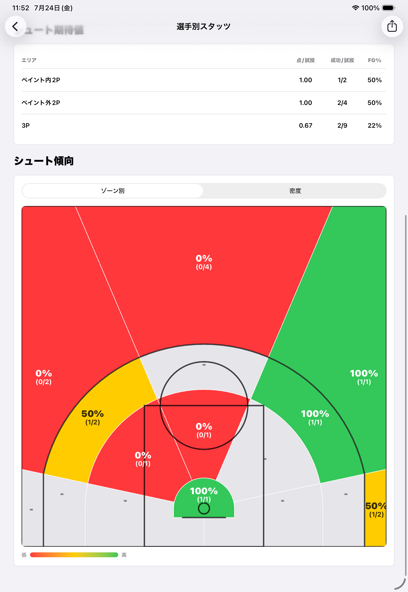
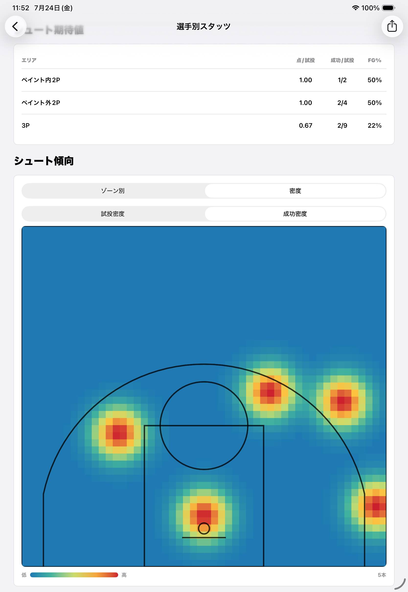

iPhone / iPadで見る
Readerの使い方
Writerから受け取った.bbstats／.bbplayerを読み込み、試合や選手のスタッツを閲覧します。 Readerでは試合内容を編集しません。
1. ファイルを受け取る
Readerは、Writerが書き出した.bbstatsまたは.bbplayerを読み込みます。 Files、AirDrop、メール、メッセージなど、iOSの共有機能を使って受け取れます。
2. Readerへ読み込む
Readerからファイルを選ぶ
- Readerを開きます。
- 空の画面では「ファイルを選択」、取り込み後は右上の読み込みボタンを選びます。
- Filesから.bbstatsまたは.bbplayerを選びます。
- 検証が完了すると、試合別または選手別へ追加されます。
複数の対応ファイルを一度に選んで、まとめて読み込むこともできます。
受け取った場所から直接開く
FilesやAirDropなどでファイルを選び、「Basketball Stats Readerで開く」を選ぶ方法もあります。 Readerが起動し、検証後にライブラリへ保存します。

3. 試合スタッツを見る
「試合別」には、読み込んだ試合が新しい順に表示されます。カードをタップすると試合詳細を開きます。


試合詳細では、最終スコア、試合評価、チーム合計、選手別box score、シュートチャートを確認できます。 表示範囲は全体、各クオーター、前半、後半へ切り替えられます。
4. 試合評価・シュート傾向を読む
試合評価
「試合評価」は、チーム単位の攻撃内容を7つの試合評価指数で比較する表です。 記録済みのスタッツから自動計算されるため、追加の入力は必要ありません。 WriterのView Statusと保存済み試合、Readerの試合詳細で同じ値を確認できます。
シュートチャート・ゾーン・密度
シュートチャートは成功を緑の丸、失敗を赤い×で表示し、どこから打って結果がどうだったかを確認できます。 FTは投球位置が固定されているため、フィールドゴールのチャート、ゾーン、密度には含めません。
{kind=link}

{kind=link}

試投密度と成功密度は本数の集中度です。効率を比べるときは「ゾーン別」の成功率、 打つ傾向を見るときは「試投密度」、得点位置を見るときは「成功密度」を使います。
5. 選手スタッツ・期待値・データ統合
- 画面上部で「選手別」を選びます。
- 選手名で検索したり、チームで絞り込んだりします。
- 選手をタップし、平均、試合別成績、シュート期待値、ゾーン、密度を確認します。
読み込んだ複数試合と.bbplayerを横断して集計します。同じ試合・同じ選手のデータは 一度だけ数えるため、あとから完全な試合ファイルを読み込んでも二重計上しません。
選手ごとのシュート期待値
「シュート期待値」は、記録済みの成功数と試投数から求める1試投当たりの実績得点です。 ペイント内2P、ペイント外2P、3Pに分けて、「点／試投」「成功／試投」「FG%」を表示します。
選手データを統合する
同じ人物でも、別の端末やチームで新しく登録すると別の選手IDになります。 名前や背番号だけでは別人と区別できないため、アプリは自動統合せず、ユーザーが同一人物だと確認した場合だけまとめます。
端末Aでは「田中 #7」、端末Bでは「TANAKA #12」と登録されているが、実際は同じ選手だった場合です。 背番号変更、表記の違い、移籍・カテゴリ変更、別端末から受け取ったデータで成績が分かれたときに使います。
- 「選手別」の「選手統合」、または選手詳細の「データ統合」を開きます。
- 統合後の表示の基準にする選手を選びます。
- 同じ人物として追加する登録を検索して選びます。
- 統合後に表示する名前と背番号を確認し、統合を確定します。
統合すると、試合数、1試合平均、試合別成績、シュート期待値、ゾーン、試投密度、成功密度が 1人分として再集計されます。各試合の選手名やbox score、受け取った共有ファイルの原本は変更しません。
7. 削除・復元する
試合一覧で左へスワイプすると、ファイルをゴミ箱へ移動できます。 右上のゴミ箱から復元または完全削除を選べます。
.bbplayer由来の選手データもゴミ箱へ移動できます。同じ選手に試合由来の成績がある場合は、 .bbplayerを削除しても試合から得た成績は残ります。